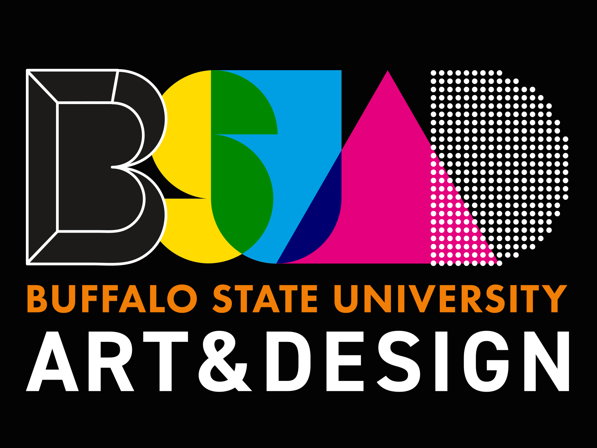

Fri, Nov 65:00 PM – 7:00 PM
Kaia Norment
Dr. Margaret E. Bacon Student Gallery
1300 Elmwood Ave, Buffalo, NY 14222

Come see what our graduating artists and designers have made. One calendar. All the receptions, openings, and launches.
↓ Download all 14 events (.ics)Compatible with Apple Calendar, Google Calendar, Outlook, and other calendar apps. Import the downloaded file to add the events.
Dr. Margaret E. Bacon Student Gallery
1300 Elmwood Ave, Buffalo, NY 14222
Allen Street Hardware
245 Allen St, Buffalo, NY 14201
Picture Your Walls
184 Buffalo St, Hamburg, NY 14075
Crane Branch Library
633 Elmwood Ave, Buffalo, NY 14222
Revolution Gallery
1419 Hertel Avenue, Buffalo NY 14216
Buffalo Creative Workshop
255 Great Arrow Ave, Suite 205, Buffalo, NY 14207
Dr. Margaret E. Bacon Student Gallery
1300 Elmwood Ave, Buffalo, NY 14222
Parables Gallery and Gifts
1027 Elmwood Ave, Buffalo, NY
Essex Street Pub
530 Rhode Island, Buffalo, NY 14213
Dr. Margaret E. Bacon Student Gallery
1300 Elmwood Ave, Buffalo, NY 14222
Rust Belt Books
415 Grant St, Buffalo, NY 14201
Honorable Shirley Chisolm (Audubon) Library, Community Room 2
350 John James Audubon Pkwy, Amherst, NY 14228
Niagara Arts and Culture Center (NACC), Niche Gallery
1201 Pine Ave, Niagara Falls, NY 14301
Ben Garelick Jewelry Store
5001 Transit Rd, Buffalo, NY 14221